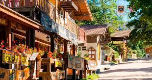
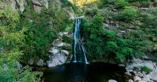

La Cumbrecita se encuentra en un pequeño valle de las Sierras Grandes de Córdoba, a 1450 msnm. Un rosario de casas de estilo centroeuropeo concentradas a la vera de los senderos que atraviesan el bosque.
Llegar a la Cumbrecita por su serpenteante camino asfaltado es llegar al paraíso, donde se combina el pasado inmigrante, la arquitectura heredada y las nuevas tecnologías a tono con el perfil del turista que la visita. Pura, natural y saludable, ha merecido la categorización de primer Pueblo Peatonal de la Argentina y uno de los destinos turísticos más consolidados de la región, con más de 360 mil visitantes que lo recorren anualmente. Se encuentra rodeado de ríos y arroyos que bajan de las sierras, formando playas y cascadas muy cerca del casco histórico. Su gastronomía y la calidad de los servicios que brinda es una de las principales características, así como la historia de su creación y la marcada identidad centro-europea de sus construcciones y costumbres.
